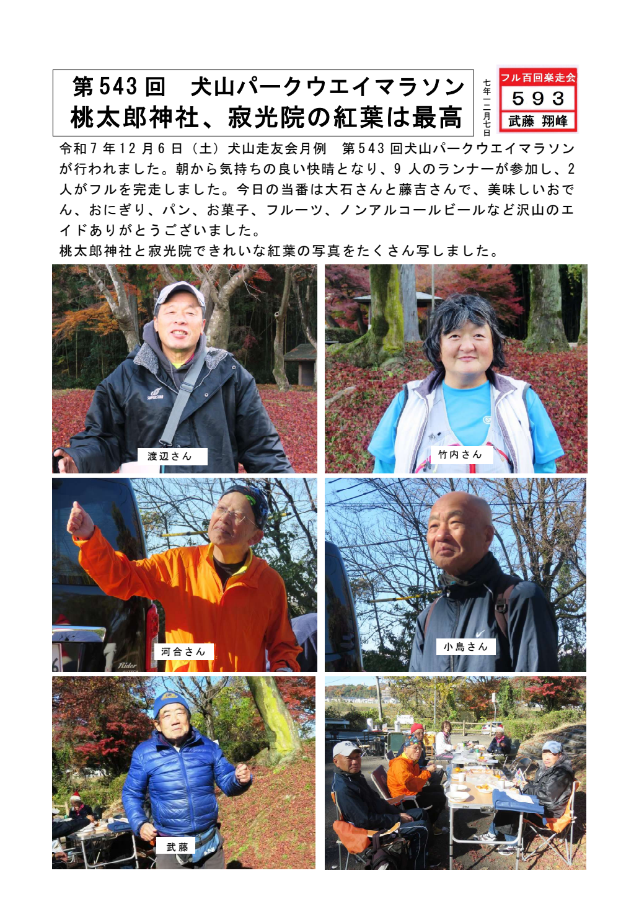

2025-12-06 18:56:32
2025年12月6日（土）
| No. | 参加者 | 距離 | 時間 |
|---|---|---|---|
| 1 | 渡辺 和次 | 6km | 1:00:00 |
| 2 | 武藤 彰 | 13km | 3:41:00 |
| 3 | 竹内 弥富 | ハーフ | 4:10:00 |
| 4 | 石原 久行 | 10.5km | 2:00:00 |
| 5 | 小島 博史 | フル | 7:09:23 |
| 6 | 大石 史枝 | — | — |
| 7 | 横幕 真美子 | フル | 5:32:56 |
| 8 | 藤吉 洋子 | — | — |
| 9 | 河合 邦純 | 17km | 3:45:00 |
コメント：渡辺
月例犬山は朝から寒さ厳しい状況でしたが、晴れ間が出てくると気温も上昇して快晴模様
でしたが、9名の参加者が各々の距離を完走しました。
エイド担当の大石さん、藤吉さんからの熱ったかなおでん、混ぜおにぎり、フルーツなどの
飲食物準備頂き美味しく頂きました。参加者の皆様お疲れ様でした。
食事しながらの犬山走友会としての総会＆納会があり議事提案も了承いただきことを
報告します。今年も無事「事件」「事故」もなく皆さんの協力で開催することができて感謝します。
